AirPods을 눌러 음소거
어떤 통화 중이든 스템을 한 번 누르면 음소거되고, 다시 누르면 음소거가 해제됩니다. Google Meet 등 웹 화상통화에서 AirPods 입력을 무시하는 Chrome에서도 완벽하게 작동합니다.
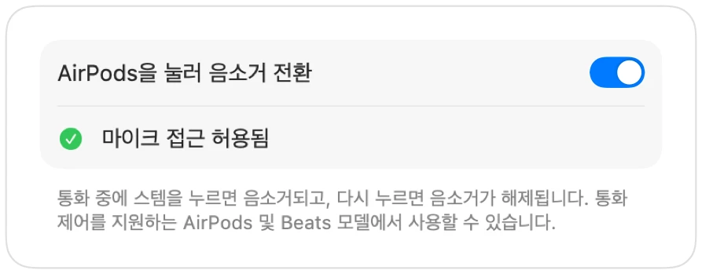
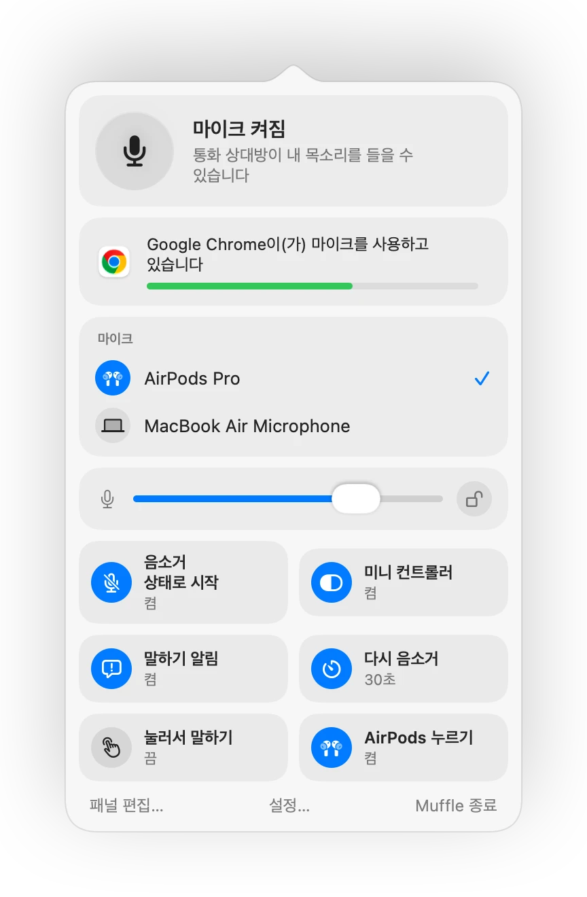

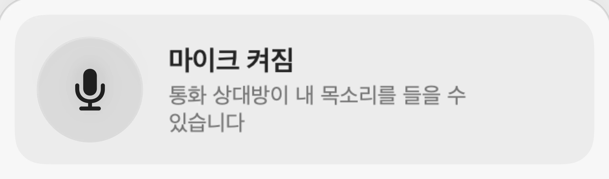
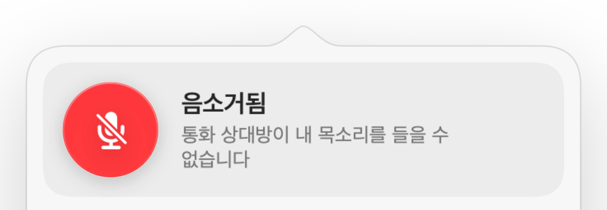
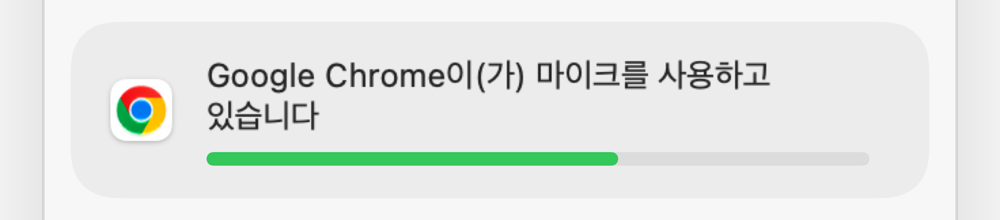
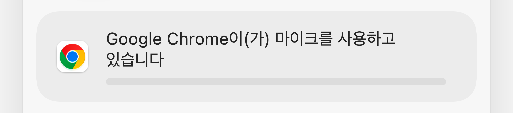
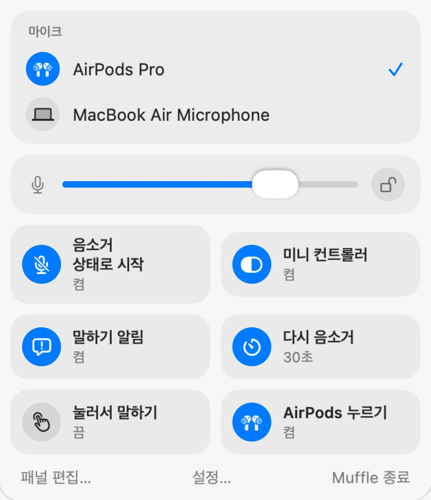
Mac용 Muffle
AirPods이나 키보드 단축키 하나를 누르세요. Muffle이 마이크 자체를 끄므로 Google Meet, Zoom, Teams, Slack 등 모든 앱에 완벽한 무음 상태가 전달됩니다.
3일 동안 무료입니다. 이후에는 일회성 결제이며 구독이 아닙니다. macOS 14 Sonoma 이상 지원.
버튼을 클릭하거나 AirPods을 누르거나 단축키를 사용하세요. Muffle이 마이크 자체를 꺼서 모든 앱에서 소리가 나지 않습니다.
음소거, 마이크 선택, 레벨 잠금, 기능 켜고 끄기까지 메뉴 막대에서 바로 제어할 수 있습니다.
Mac의 모든 마이크가 한곳에 표시됩니다. 마이크를 하나 선택하면 모든 앱에 바로 적용됩니다.
Chrome, Zoom, Teams는 마이크 레벨을 임의로 변경하곤 합니다. 잠금을 켜 두면 Muffle이 원래대로 되돌려 놓습니다.
패널에서 바로 기능을 켜고 끌 수 있으며, 배치할 항목도 직접 선택할 수 있습니다.
대부분의 음소거 버튼은 해당 앱 하나만 음소거합니다. Muffle은 마이크 자체를 끄기 때문에 Mac의 모든 앱에서 완벽한 무음 상태가 유지됩니다.
기본 스타일, 녹색 및 빨간색, 또는 단순한 점 등 원하는 메뉴 막대 아이콘을 선택하세요. Mac 시작 시 Muffle이 함께 실행되도록 설정할 수도 있습니다.
모든 통화를 음소거 상태로 시작하고, 통화가 끝나면 음소거를 해제하며, Mac을 잠그거나 헤드셋 연결이 끊기면 자동으로 음소거합니다.
탭하여 전환하거나, 길게 눌러 말하거나, 길게 눌러 음소거할 수 있습니다. 음소거 및 음소거 해제 키를 각각 따로 지정하거나, 오른쪽 Option과 같은 말하기 키를 추가해 보세요.
메뉴 막대 패널에 표시할 항목과 하단에 배치할 빠른 토글을 선택하세요.
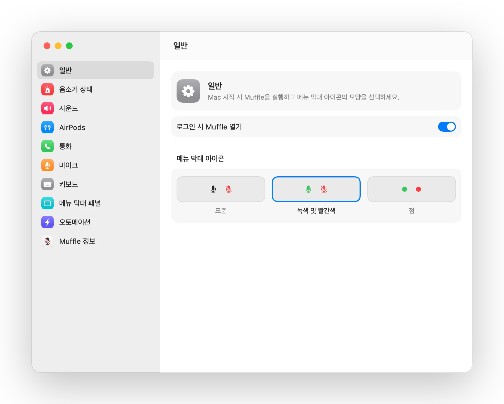
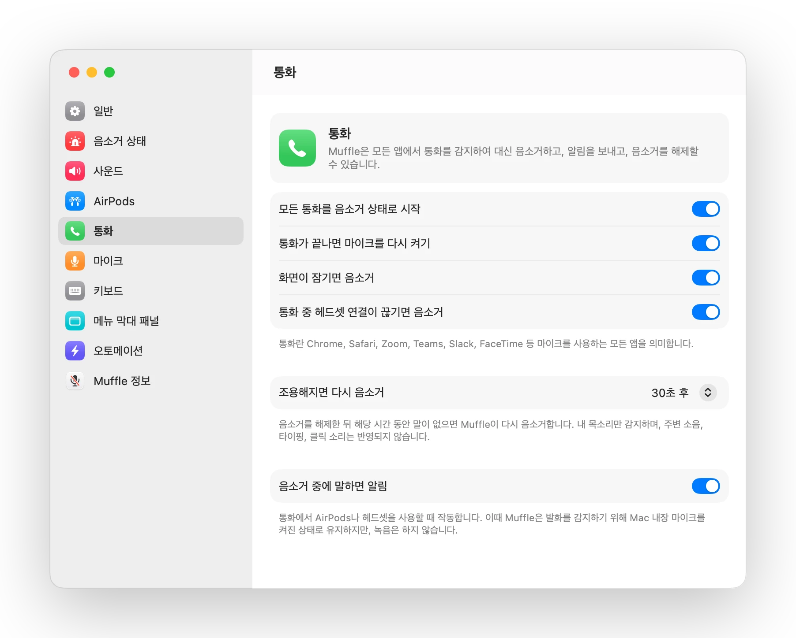
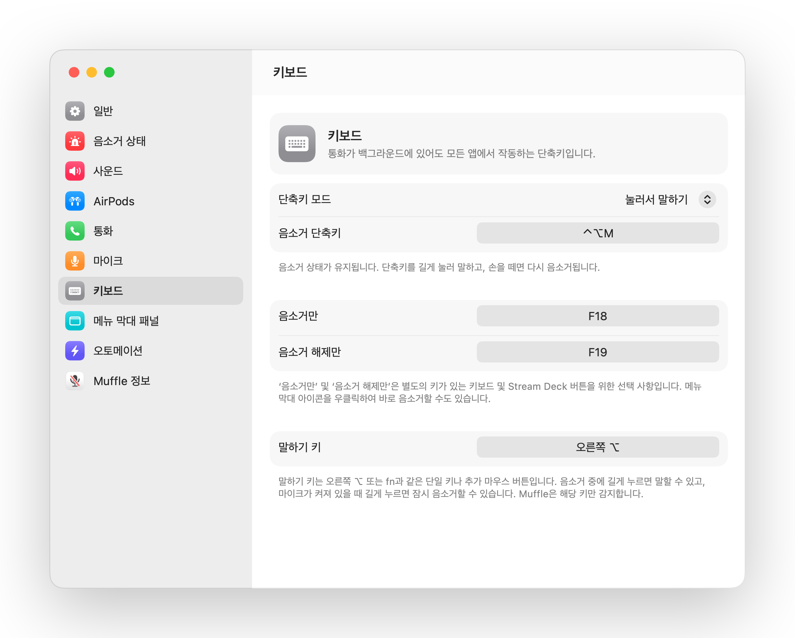
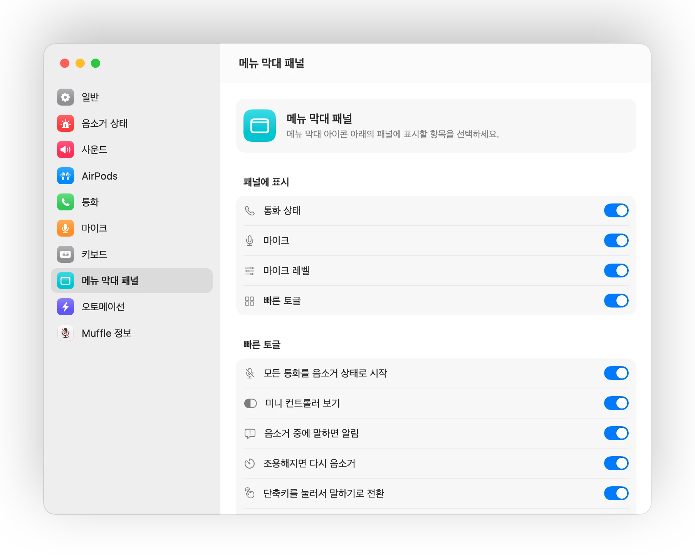
어떤 통화 중이든 스템을 한 번 누르면 음소거되고, 다시 누르면 음소거가 해제됩니다. Google Meet 등 웹 화상통화에서 AirPods 입력을 무시하는 Chrome에서도 완벽하게 작동합니다.

음소거 상태에서 말을 시작하면 아무도 듣지 못하는 상태로 길게 설명하기 전에 Muffle이 즉시 알려 줍니다.

Control-Option-M 단축키로 어디서나 음소거할 수 있으며, 통화가 백그라운드 탭에 있어도 작동합니다. 음소거 중에 길게 누르면 말할 수 있고, 손을 떼면 다시 음소거됩니다.

Chrome, Zoom, Teams가 제멋대로 마이크 볼륨을 변경하지 못하도록 레벨을 잠그면 Muffle이 원래대로 되돌려 놓습니다.

작은 플로팅 버튼이 통화 중 마이크 상태를 보여 줍니다. 클릭하면 바로 음소거하거나 해제할 수 있습니다.
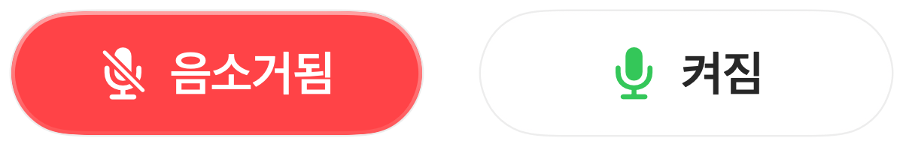
단축키 작동 방식을 선택하세요. 탭하여 전환하거나, 길게 눌러 말하거나, 기침할 때처럼 길게 눌러 음소거할 수 있습니다. 음소거 및 음소거 해제 키를 따로 지정하거나, 오른쪽 ⌥ 같은 단일 키 또는 추가 마우스 버튼을 길게 누르도록 설정할 수도 있습니다.
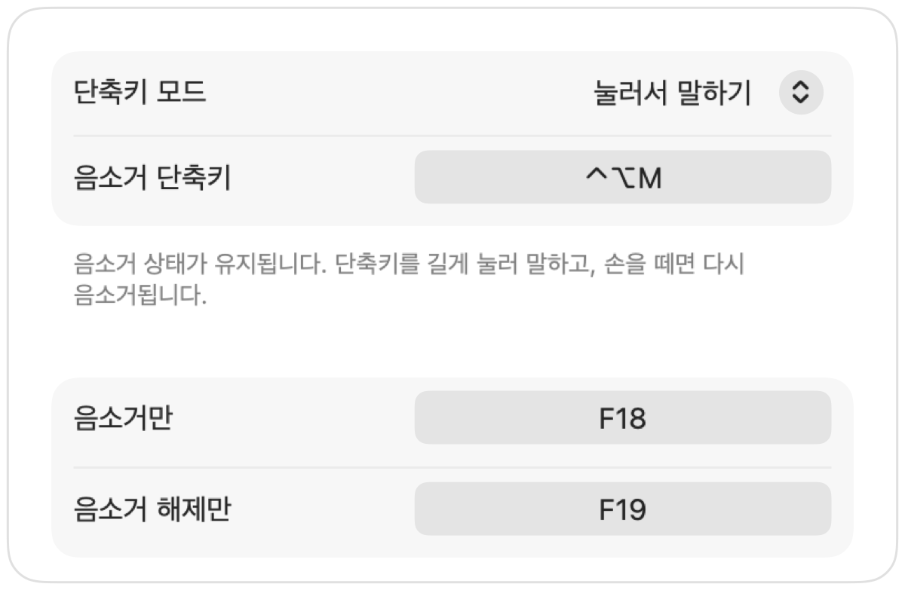
한마디 하려고 음소거를 해제하셨나요? 설정한 시간 동안 말이 없으면 Muffle이 다시 음소거합니다. 타이핑이나 주변 소음은 반영되지 않고 오직 내 목소리만 감지합니다.
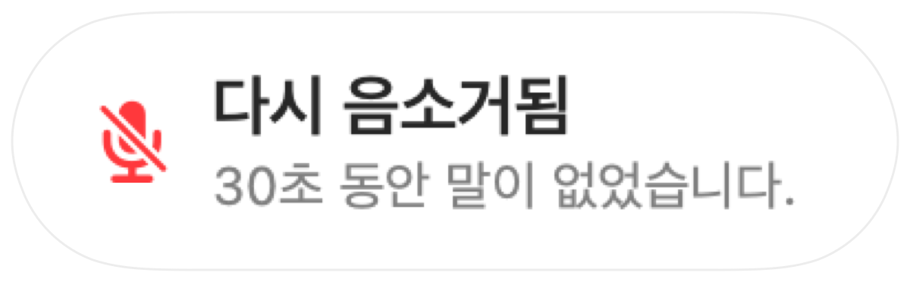
조용한 방에서 AirPods을 사용할 때는 Mac 내장 마이크를 제안하여 AirPods에서 통화 음질이 최고 품질로 재생되도록 합니다. 주변이 시끄러워지면 AirPods 마이크를 제안합니다.
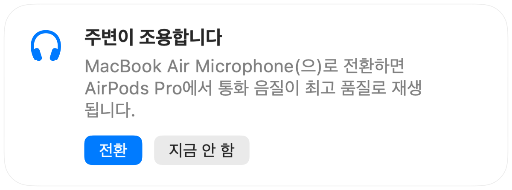
모든 통화를 음소거 상태로 시작하고, 통화가 끝나면 마이크를 다시 켜며, Mac 화면이 잠기면 자동으로 음소거합니다.
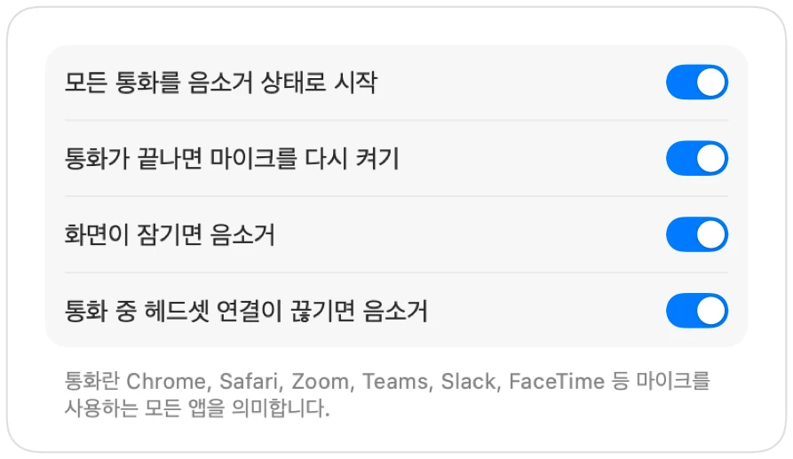
통화 중에 헤드폰 연결이 끊기면 통화가 Mac 내장 마이크로 전환되어 주변 소음이 전달되기 전에 Muffle이 먼저 음소거합니다.
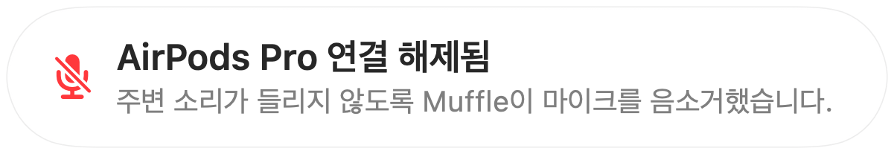
단축어 앱, Siri, Stream Deck, Raycast 또는 제어 센터 버튼을 통해 편리하게 음소거할 수 있습니다.
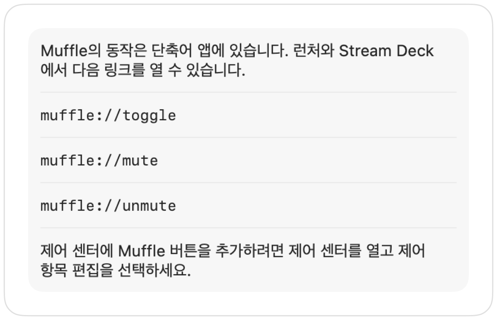
화면 가장자리의 녹색 또는 빨간색 불빛, 색상이 바뀌는 메뉴 막대 아이콘, 플로팅 버튼, 마이크별로 끌 수 있는 사운드까지 준비되어 있습니다. 원하는 방식을 켜 보세요.
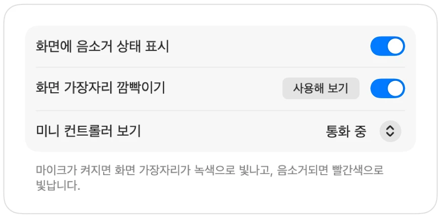
Muffle은 오디오를 절대 녹음, 저장, 전송하지 않습니다. 오직 마이크를 켜고 끄며 음량 수치만 확인할 뿐입니다. 계정 생성, 분석 도구, 사용자 추적도 전혀 없습니다.
Mac App Store에서 Muffle을 설치하고 마이크 접근을 허용합니다.
평소처럼 원하는 앱에서 통화나 회의에 참여합니다.
AirPods을 누르거나 Control-Option-M 단축키를 누르고, 또는 메뉴 막대 아이콘을 클릭하여 음소거합니다.
네, 작동합니다. Chrome은 웹 화상회의에 AirPods 음소거 입력을 전달하지 않지만, Muffle이 해당 입력을 감지하여 마이크 자체를 음소거합니다. 브라우저 탭에서 진행하는 모든 통화에서도 동일하게 적용됩니다.
통화 앱의 버튼이 아니라 Muffle이 마이크 자체를 끄기 때문에 통화 앱 화면에는 마이크가 켜진 상태로 보일 수 있습니다. 하지만 상대방에게는 어떤 소리도 전달되지 않습니다. 음소거 중에는 메뉴 막대의 Muffle 아이콘이 빨간색으로 바뀝니다.
AirPods Pro, AirPods 3세대 이상, AirPods Max 및 통화 제어를 지원하는 Beats 모델을 지원합니다. 키보드 단축키와 메뉴 막대 기능은 모든 마이크에서 사용할 수 있습니다.
네. 데스크탑 앱과 브라우저 통화를 포함하여 Mac에서 마이크를 사용하는 모든 앱에서 Muffle을 사용할 수 있습니다.
아닙니다. 모든 기능을 3일 동안 무료로 사용해 본 후, 한 번만 결제하면 평생 Muffle의 잠금을 해제하여 사용할 수 있습니다.
macOS는 마이크를 사용 중인 앱에만 AirPods 누름 입력을 전달하기 때문에 Muffle이 통화 중에 무음 연결을 열어 둡니다. 오디오는 일절 녹음되지 않습니다.
Muffle이 종료될 때 마이크를 다시 켜기 때문에 음소거 상태로 갇히는 일이 없습니다.
macOS 14 Sonoma 이상을 지원합니다. 제어 센터 버튼 기능은 macOS 26 이상이 필요합니다.
네, 지원합니다. 설정에서 ‘눌러서 말하기’를 선택하고 단축키를 길게 눌러 말할 수 있습니다. 오른쪽 ⌥, fn 같은 단일 키나 추가 마우스 버튼을 길게 누르도록 설정할 수도 있습니다.
통화 앱이 AirPods 마이크를 사용하면 AirPods이 통화 모드로 전환되어 음질이 낮아집니다. 조용한 방에서는 Muffle이 Mac 내장 마이크를 대신 제안하여 AirPods의 최고 품질 음질을 그대로 유지할 수 있습니다.
그렇지 않습니다. Muffle은 Apple의 온디바이스 사운드 분석 기술로 음성을 인식하므로 실제 발화만 감지합니다. 타이핑, 클릭 소리, 주변 소음은 반영되지 않으며 어떠한 오디오도 녹음되지 않습니다.
Muffle은 3일 동안 무료로 체험해 볼 수 있습니다.